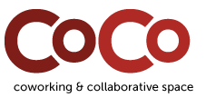
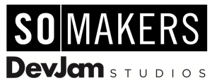
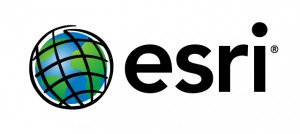
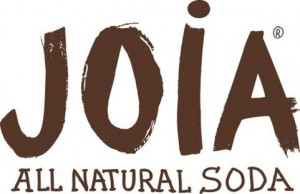
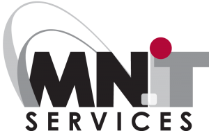
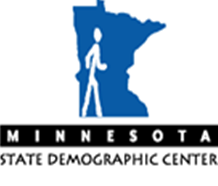
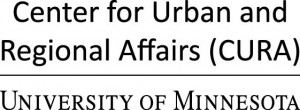

Sponsors and Partners
The Office of the Minnesota Secretary of State thanks the Capitol Code sponsors and partners for their generous contributions and support.
Sponsors
CoCo® is a place where independent workers, small businesses and corporate workgroups can gather to share ideas, team up on projects and get some work done. We’re a business center that gives you an alternative to working from home or meeting at the local coffee shop.
Google for Entrepreneurs has programs all over the world to foster entrepreneurship, empowering the next generation of innovators to be successful. Whether it is… day-long mentorship events for small businesses owners, sponsoring Startup Weekend to double their presence around the world, free workspace for startups at Campus London,tech-training for women entrepreneurs in India, or using Google products to grow businesses, we love working in local communities to encourage innovation and entrepreneurship.
 SoMakers at DevJam Studios is a drop-in coworking space housed in a sunny coffee shop environment. Makers of all kinds gather here to get work done, fueled by all the coffee, water and wifi they can consume.
Microsoft has an enduring commitment to working to fulfill our public responsibilities and to serving the needs of people in communities worldwide. Fundamental to this commitment is the role we serve as a responsible global corporate citizen.
As our company has grown, this commitment has extended far beyond our own products and services and has been amplified many times over through our network of partners, including governments, nonprofits and other organizations.
Esri is an exciting company doing important work. Our technology enables organizations to create responsible and sustainable solutions to problems at local and global scales.
At Esri, we believe that geography is at the heart of a more resilient and sustainable future. Governments, industry leaders, academics, and nongovernmental organizations (NGOs) trust us to connect them with the analytic knowledge they need to make these critical decisions that shape the planet.
We invite you to discover ways that you can leverage our technology and expertise in your own organization.
E-Democracy.org builds online public space in the heart of real democracy and community. Our mission is to harness the power of online tools to support participation in public life, strengthen communities, and build democracy. Starting with the world’s first election information website in 1994 in Minnesota, today we host over 50 local Issues Forums in 17 communities across three countries – New Zealand, the United Kingdom, and the United States. In addition to these “online town halls” and our “community life” forums we promote civic engagement online around the world.
JOIA started over a dinner with great friends. After years of creating his own sparkling drink concoctions, Bob, our founder, observed all of the interesting cocktail combinations of fruits, herbs and spices that were being offered and the question arose: why isn’t anyone doing something this interesting with sodas?
Cardboard is a collaborative tool for creating and using Story Maps. It is a virtual home for teams that like to organize by story maps, but can’t always share the same wall. Think of Cardboard as your virtual home for those sticky notes.
{kind=link}
Fresh Bar was created by a pair of Minnesota twins, Will Handke and Ross Pomeroy (yes, different last names), who share a huge passion for healthy eating. In 2011, they began to wonder why there were so few good nutrition bars to choose from and why they all had to be served dry and come loaded with tasteless preservatives. Will and Ross were upset, but instead of throwing their hands up in disgust, they threw on their oven mitts and got to work.
The result of their effort is Fresh Bar. Will and Ross’s goal was to make a bar with natural, whole ingredients, that tastes great, is healthy, and maintains its straight-out-of-the-oven texture. They believe that Fresh Bar has accomplished this goal and they’d love for you to give them a chance to prove it!
In 2012, Will and Ross were joined by three of their childhood friends, Austin Hinkle, Mike Steffan and Tom Johnson.
EcoStatic Inc is the maker of Slicky Notes and Slicky Boards, environmentally sustainable writing surfaces that use static electricity instead of adhesive to stick to walls and surfaces. In addition to our unique products, we are committed to three primary dimensions of sustainability—social, environmental and economic.
{kind=link}
Partners
 As the State of Minnesota’s central IT organization, MN.IT Services manages the governance process for enterprise leadership and planning, and provides Minnesota government customers a wide variety of technical services. Our mission is to provide high-quality, secure and cost-effective information technology that meets the business needs of government, fosters innovation, and improves outcomes for the people of Minnesota.
Our mission is to connect civic technologists, public servants, and community advocates of the Twin Cities and surrounding metro area and to build a better public experience for ourselves through collaboration, experimentation, and technology.

The Minnesota State Demographic Center, part of the Department of Administration, is the main provider of demographic data and analysis for the state. The Center provides yearly population estimates and long-term projections each decade, and analyzes and distributes data from the federal government and other sources to monitor key trends. The State Demographic Center serves as a liaison to the U.S. Census Bureau and as a resource to all Minnesotans to find the demographic data they need to make smart decisions.
 The Center for Urban and Regional Affairs (CURA) strives to be a nationally recognized model for university-community engagement. CURA is founded on the belief that partnership between the university and the community is mutually beneficial. Communities determine issues important to them, and provide an understanding of the context of these issues and the wisdom to shape how they can best be addressed to create vital places to live and work. The university contributes extensive knowledge and expertise to understand community issues and discover new approaches to address them. This model of engaged research leads to outcomes that strengthen the community and enrich academic research.
The Census Bureau’s mission is to serve as the leading source of quality data about the nation’s people and economy. We honor privacy, protect confidentiality, share our expertise globally, and conduct our work openly. We are guided on this mission by scientific objectivity, our strong and capable workforce, our devotion to research-based innovation, and our abiding commitment to our customers.